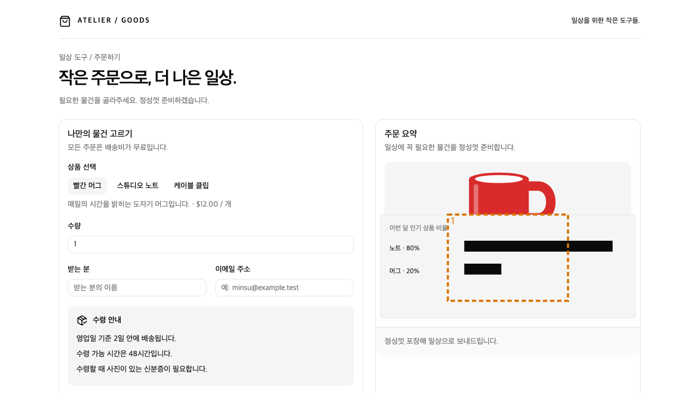
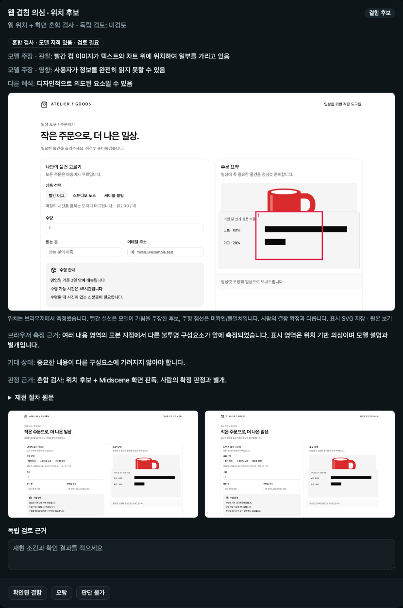

겹침을 검토 목록에서 놓치지 않기
브라우저 위치 후보 + Midscene 화면 검토. 순수 Vision 결과와 구분합니다.
독립 판단
D의 실제 가림 영역은 최종 3/3 의심으로 보존했습니다. 정상 A는 초기 교차 시험 3/3 위치 후보가 없었고 기존 시각 검사도 후보가 없었습니다. 최종 로컬 A/F/G에서도 겹침 후보는 없습니다.
모델 판독 신뢰성은 해결되지 않았습니다. 최종 D는 1회 정상 오판, 2회 컵이 차트를 가린다는 역방향 설명입니다. 실제로는 차트가 컵 하단과 주문 정보를 가립니다. 올바른 모델 설명은 0/3으로 판정했습니다. 붉은 박스는 모델의 주장 표시이며 확인된 결함을 의미하지 않습니다.
총9요청·보고비용 $0.00677097. 첫 화면만 검사했고 호출1회 제한으로 종료했습니다. 전체 주문 성공 결과가 아닙니다. 모델 호출 전 런처 실패6건/0요청과 수정 전 결과도 보존했습니다.
독립 검토·실제 이미지 해시 대조D 01-d: 위치 후보 보존 / 모델 설명 독립 미수락
원장 · 실제 요청(이미지는 해시 참조)

{
"regions": [
{
"id": "region-1",
"verdict": "clear",
"order": "measured",
"occluder": "빨간 컵 이미지",
"affected": "이번 달 인기 상품 비율 텍스트와 비율 정보",
"evidence": "빨간 컵 이미지와 이 영역 사이에 충분한 간격이 존재하여 가림이 발생하지 않음",
"impact": "사용자에게 정보를 명확하게 전달할 수 있음",
"alternative": "가림이 발생할 수 있다는 추정이 가능하나, 실제 화면에서 간격이 충분하여 clear로 판단"
}
]
}D 02-d: 위치 후보 보존 / 모델 설명 독립 미수락
원장 · 실제 요청(이미지는 해시 참조)
{
"regions": [
{
"id": "region-1",
"verdict": "visible-overlap",
"order": "measured",
"occluder": "빨간 컵 이미지",
"affected": "이번 달 인기 상품 비율 텍스트와 차트",
"evidence": "빨간 컵 이미지가 텍스트와 차트 위에 위치하여 일부를 가리고 있음",
"impact": "사용자가 정보를 완전히 읽지 못할 수 있음",
"alternative": "디자인적으로 의도된 요소일 수 있음"
}
]
}D 03-d: 위치 후보 보존 / 모델 설명 독립 미수락
원장 · 실제 요청(이미지는 해시 참조)

{
"regions": [
{
"id": "region-1",
"verdict": "visible-overlap",
"order": "measured",
"occluder": "빨간 컵 이미지",
"affected": "이번 달 인기 상품 비율 텍스트와 차트",
"evidence": "빨간 컵 이미지가 텍스트와 차트 위에 위치하여 일부를 가리고 있음",
"impact": "사용자가 정보를 완전히 읽지 못할 수 있음",
"alternative": "디자인적으로 의도된 요소일 수 있음"
}
]
}제품 화면 검수
실제 저장 응답의 UI 재생이며 새 모델 실행이 아닙니다. 측정 사실과 모델 주장을 구분합니다.

UI 검수 · 전체 회귀 · 빌드